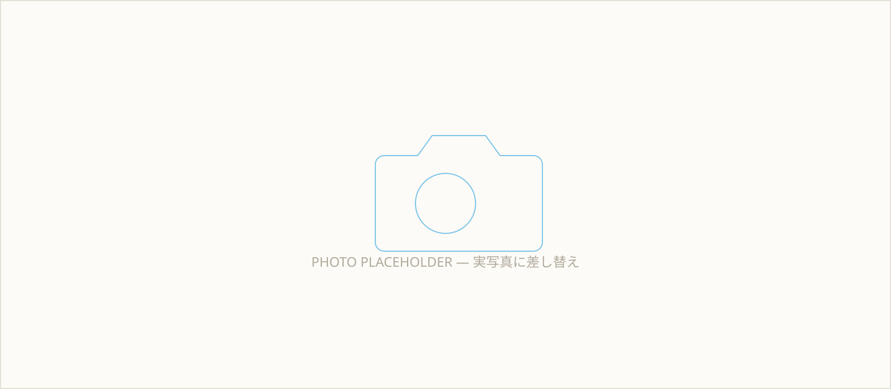
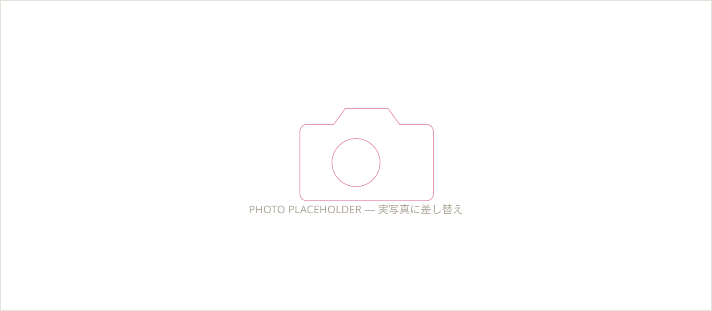

こんなお悩み、ありませんか？
「制作会社とのやり取りがメールだけで、少し不安」——そんな声もよく伺います。整理すると、お悩みは大きく2つに分けられます。
ホームページのお悩み
- そもそもホームページがまだない
- あるけれど何年も更新できておらず、情報が古いまま
- スマホでの見え方まで気が回っていない
- 何をどこまで頼めばいいのか、正直よくわかっていない
写真のお悩み
- スマホで撮った写真しかなく、少し恥ずかしい
- 商品やメニューの魅力が写真でうまく伝わっていない
- スタッフや店内の写真がなく、雰囲気が伝わりにくい
- 撮影を頼みたいが、カメラマンをどう探せばいいかわからない
そのお悩み、写真も撮れる地元のホームページ屋さんに、まとめてお任せください。
まちのWEB写真室が選ばれる理由
価格だけでなく、「安心して任せられるかどうか」を大切にしています。
会って話せる、安心感
画面越しのやり取りだけでは伝わりにくいこと、ありますよね。できる限り訪問・対面での打ち合わせを行い、お店やお仕事の魅力をじっくり伺ったうえで制作を進めます。
プロの写真撮影込み
カメラマンが直接現地に伺って撮影するので、写真だけ別の業者に頼む手間がありません。お店の雰囲気や商品、スタッフの表情を、伝わる一枚に仕上げます。
地元密着・適正価格
横浜市港北区を中心に活動しているからこそ、地域の相場に合わせたご提案が可能です。小さなお店や個人事業主の方にも依頼しやすい価格を目指しています。

料金プラン
まずはお気軽にご相談ください。内容に応じたお見積りをご提案します。
LIGHT
¥49,800〜
まずは1ページ、シンプルに始めたい方へ
- 1ページ構成（LP形式）
- スマホ完全対応（レスポンシブ）
- LINE導線の設置
- お問い合わせフォーム設置
- 対面ヒアリング1回
STANDARD
¥98,000〜
写真撮影込みで、しっかり魅力を伝えたい方へ
- LIGHTプランの内容をすべて含む
- プロカメラマンによる撮影（店舗・商品・スタッフ等）
- ページ数の追加相談可
- 撮影写真の選定・レタッチサポート
- 対面打ち合わせ2回まで
- 独自ドメイン設定サポート
※撮影は横浜市港北区周辺エリアを基本としております。対応エリア外の場合はご相談ください。
※上記は税別価格の目安です。ページ数や撮影内容により変動しますので、まずはお気軽にご相談ください。
制作の流れ
ご相談
LINE・お電話・フォームからお気軽にご連絡ください。
お打ち合わせ
（対面OK）
実際にお会いして、ご要望やお店の魅力を伺います。
撮影
プロカメラマンが店舗・商品・スタッフを撮影します。
制作
ヒアリング内容と写真をもとに制作を進めます。
公開
ご確認いただいたのち、ホームページを公開します。
サポート
公開後の修正や運用のご相談も承ります。

よくある質問
お問い合わせ
まずはお気軽にご相談ください。ご相談・お見積りは無料です。